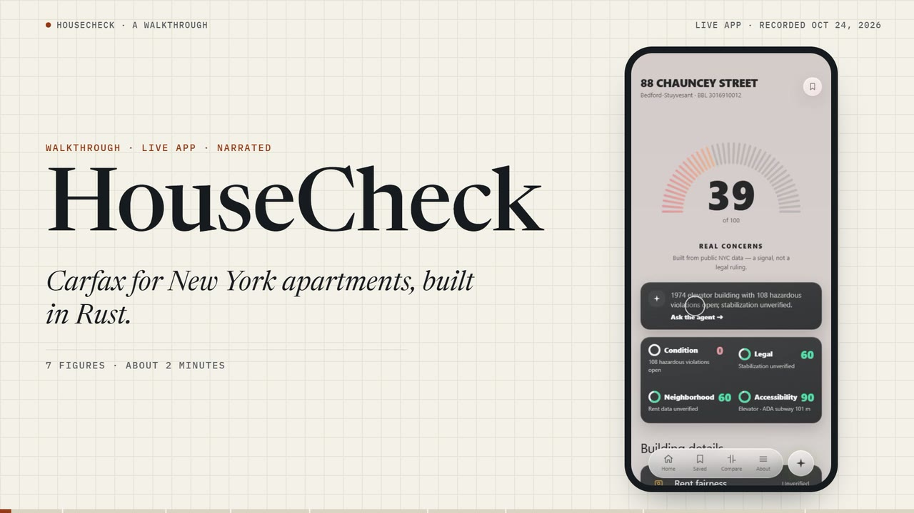

HouseCheck
Carfax for NYC apartments: a Building Health Card scored from public city data, with an export a stranger can verify offline.
176 tests · Ed25519 · live
Open the build- Role
- Lead builder · 192 of 201 commits
- Stack
- Rust · axum · SQLite